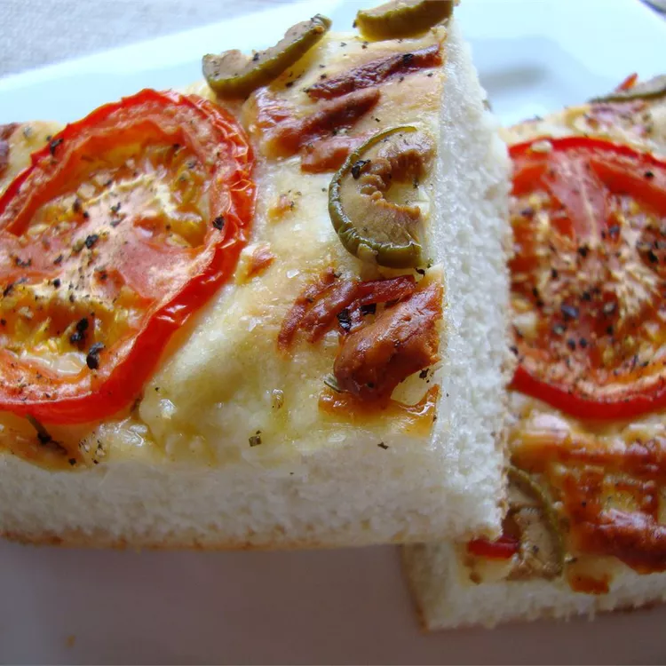

Foccacia

Michael's Foccacia Bread
This version of the classic foccacia bread is easy to make while remaining authentic and true to the original. This may be the fastest yeast bread you make; it takes only one hour from conception to completion.
Romano or Asiago cheese are nice to use instead of Parmesan cheese.
Ingredients
- 1 tablespoon honey
- 2 cups warm water
- 1 tablespoon active dry yeast
- 1 tablespoon kosher salt
- 1 tablespoon extra-virgin olive oil
- ½ cup diced onion
- 5 cups all-purpose flour, or as needed
- 3 tablespoons extra-virgin olive oil
- 2 tablespoons fresh chopped rosemary
- ¼ cup freshly grated Parmesan cheese
- 1 tablespoon kosher salt
Steps
- Step 1: Dissolve honey in the warm water in a large bowl, then sprinkle yeast over the top. Let stand for 5 minutes until the yeast softens and begins to foam. Stir in 1 tablespoon of salt, 1 tablespoon olive oil, onions, and 5 cups of flour until the dough comes together. Knead on a well floured surface until smooth and elastic, about 5 minutes. Lightly oil a large bowl, place the dough in the bowl and turn to coat with oil. Cover with a damp cloth and let rise in a warm place until doubled in volume, about 20 minutes.
- Step 2: Preheat oven to 415 degrees F (215 degrees C).
- Step 3: Place dough onto oiled baking sheet, and flatten to cover the whole sheet evenly. Use the tips of your fingers to make indentations all over the dough spaced about 1 inch apart. Drizzle the focaccia with 3 tablespoons olive oil, then sprinkle rosemary, Parmesan cheese, and remaining 1 tablespoon of kosher salt over the top. Let rise for 10 minutes.
- Step 4: Bake in preheated oven 20 minutes until golden brown.
Home